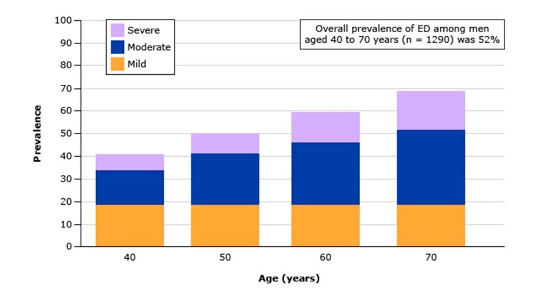
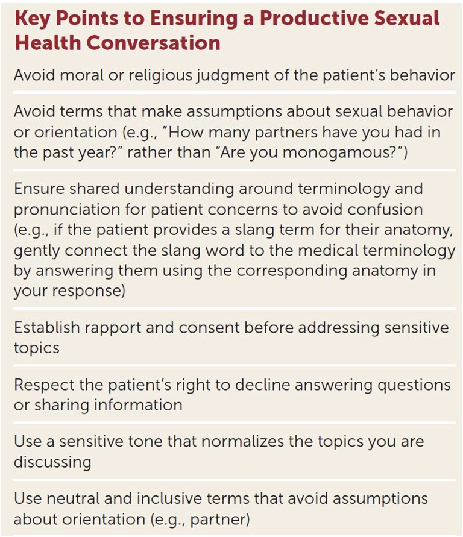
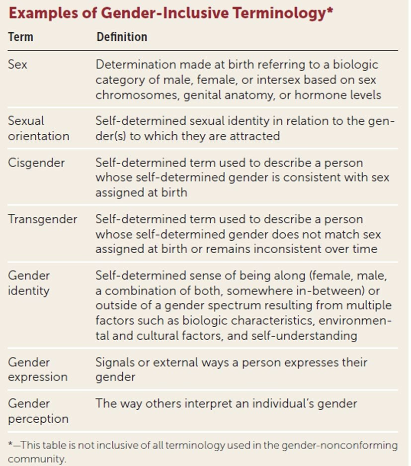

Approach to Sexual Health
- Sexual health (WHO) = physical, emotional, mental and social well-being in relation to sexuality — not merely the absence of disease.
- Concerns are common: 50–98% of women and ~40% of men report at least one. In men it is mostly erectile dysfunction and premature ejaculation, and it rises every decade.
- Response models: Masters & Johnson's four phases (excitement, plateau, orgasm, resolution) → Kaplan's three (desire, excitement, orgasm) → Basson's circle, where arousal can trigger desire. Men have a refractory period; women don't, so can have multiple orgasms.
- History-taking: ask permission, assure confidentiality early, use the patient's words, open questions, silence and repetition. Allow time — 45–60 minutes is ideal, so book a return visit if needed.
- The CDC's 5 Ps: Partners, Practices, Protection, Past STIs, Pregnancy plans — ± Pleasure. There is no validated comprehensive tool.
- A safe space starts with your own implicit bias, then inclusive forms, the two-step gender question and pronouns.
Learning Objectives
- Describe how you will approach issues involving sexuality as a family physician.
- Describe ways to inquire about sexual function and practices.
- List ways your office can be made into a safe space for these discussions.
- Contrast sexual function and response for heterosexual cis-men and cis-women.
- Define various sexual preferences.
Dr. Krista Cameron, reproductive endocrinology and infertility (REI), 25 minutes. A text-based module with no recorded lecture; the content is the module itself plus its 42-slide deck.
Why Ask at All
| How common | What they raise | |
|---|---|---|
| Women | 50–98% report at least one concern | Interest in sex (or lack of it) · difficulty with orgasm · inadequate lubrication · dyspareunia · body image · unmet needs · wanting information · physical and sexual abuse, coercion |
| Men | ~40% report at least one concern | Most commonly erectile dysfunction or premature ejaculation |

It climbs with every decade. Overall ED prevalence in men aged 40–70 was 52% in this cohort. Mild ED stays flat at ~18%; the growth is in moderate and severe. The module's point: because it changes with age, re-ask — a man who had no concerns at 45 may have new ones at 60.Before you walk into the room, be honest about your own implicit biases. Everyone has them. The aim is to be aware of them so they don't come into the encounter.
The Sexual Response Cycle
| Model | Stages | Note |
|---|---|---|
| Masters & Johnson, Human Sexual Response, 1966 | Excitement → plateau → orgasm → resolution | First direct laboratory study: > 10,000 episodes in 382 women and 312 men; before it, research was animal studies. The phase boundaries were arbitrary and vary widely between people |
| Kaplan, 1979 | Desire (drive) → excitement → orgasm | Cut the stages to three and added desire as the first |
| Basson's circular model (shown below) | A cycle, not a line | Desire can be responsive — triggered by arousal — rather than always present first |
![Circular flow diagram of the sex response cycle. Multiple motivations lead to deliberate attention to stimuli; biological and psychological factors feed into processing of stimuli; this produces subjective arousal plus autonomic response; arousal triggers desire; this leads to sexual satisfaction and absence of pain and to other rewards such as emotional intimacy and increased well-being, which feed back into multiple motivations. A box for initial sexual desire, marked variable, feeds in from the top.](../../../../assets/images/week-5/sexual-health/basson-circular-model.jpg) The model the module calls “most widely used”. The deck places this after the Kaplan slide, but the figure is Rosemary Basson's circular model (2001, reprinted in CMAJ 2005). Read it as a loop. Someone can start from multiple motivations (intimacy, well-being) rather than desire. Deliberate attention to stimuli is filtered through biological and psychological factors into subjective arousal, and then arousal triggers desire. Initial desire is marked variable: it may or may not be there at the start. The factors the module lists: psychological, biological, the stimulus, the arousal, the desire, the motivation.
The model the module calls “most widely used”. The deck places this after the Kaplan slide, but the figure is Rosemary Basson's circular model (2001, reprinted in CMAJ 2005). Read it as a loop. Someone can start from multiple motivations (intimacy, well-being) rather than desire. Deliberate attention to stimuli is filtered through biological and psychological factors into subjective arousal, and then arousal triggers desire. Initial desire is marked variable: it may or may not be there at the start. The factors the module lists: psychological, biological, the stimulus, the arousal, the desire, the motivation.
 The one clinical difference to know: the refractory period. Both sexes pass through excitement, plateau and orgasm. Men then have a refractory period, which lengthens with age, before another orgasm is possible. Women have none, so line A can return to orgasm from plateau: multiple orgasms. In Masters & Johnson's original figure, B is arousal that plateaus without orgasm and C is a single rapid peak and fast resolution.
The one clinical difference to know: the refractory period. Both sexes pass through excitement, plateau and orgasm. Men then have a refractory period, which lengthens with age, before another orgasm is possible. Women have none, so line A can return to orgasm from plateau: multiple orgasms. In Masters & Johnson's original figure, B is arousal that plateaus without orgasm and C is a single rapid peak and fast resolution.
| Phase | Women | Men |
|---|---|---|
| Excitement | Clitoral and labial engorgement · inner two-thirds of the vagina expands · vaginal walls thicken · uterus elevates · breasts enlarge, nipple erection | Penile erection · testes enlarge and elevate, scrotum contracts · nipple erection |
| Plateau | Vasocongestion of the lower third of the vagina · inner vagina fully expanded · uterus fully elevated · clitoris withdraws under the hood · labia minora darken | Coronal ridge widens · glans turns purplish · testes rise further · a few drops of Cowper's gland secretion |
| Orgasm | Rhythmic contractions of vaginal walls, anal sphincter and uterus at 0.8-second intervals | Internal bladder sphincter closes; vas deferens, seminal vesicles and prostate contract (emission); external sphincter relaxes and bulbocavernosus contracts (propulsion) — also at 0.8 s |
| Resolution | Everything returns to pre-arousal size · no refractory period | Loss of erection · refractory period |
Both sexes: rising myotonia, heart rate and blood pressure through excitement, returning to baseline at resolution. Orgasm is primarily a cerebral event — people with complete spinal cord injury can still experience it.
| Pro-sexual | Inhibitory |
|---|---|
| Noradrenaline · dopamine · melanocortin · oxytocin · serotonin at some receptors | Prolactin · serotonin at 5-HT2 and 5-HT3 receptors · glutamate · vasopressin · GABA |
Nitric oxide is the main neurotransmitter of clitoral engorgement. Vaginal blood volume is measured by photoplethysmography, which reads changes in how light is refracted as vasocongestion changes. What those studies show: in women, genital response and subjective arousal are often not concordant. Vasocongestion can occur without felt arousal or desire, and desire without it, and visual or tactile awareness of genital arousal matters less than it does in men. In men the two usually line up. Cultural expectations also shape what is arousing, and they differ between the sexes.
Taking a Sexual History
The main difference from any other history: the patient, and often the doctor, is embarrassed. Patients, especially men, may feel ashamed to need help with something they think they should handle privately. The job is the same as any history: put them at ease, find the real problem, get the background and make a plan together.
| Technique | What it looks like |
|---|---|
| Listen for the side-door | “I think I need a check-up.” “By the way, I have a discharge down below.” — often tacked onto a visit for something else |
| Clarify vague words | “A sore down below” could be anything from a bruise to the module's example of a rectal prolapse (its clinical photograph is left off this page) |
| Confidentiality, early | Assure it at the start. If you treat one partner of a couple, their disclosures stay private |
| Their terminology | Some patients won't know “intercourse” but will know “sex” |
| Open questions and silence | Let them tell it, and leave room to finish |
| Repetition | “Had an STI?” — no. “A sexually transmitted infection?” — no. “Ever been treated for gonorrhea?” — “Oh yes, once.” Ask the important questions from more than one angle |
| Setting and body language | Greeting, comfortable seating, privacy. Watch hands and arms, pectoral flush, posture. Postural echo (sitting in mirror image) signals rapport |
| Time and composure | 45–60 minutes is ideal and rarely possible, so book a longer follow-up. Don't show embarrassment, even about things outside your own experience; stay nonjudgmental |
The 5 Ps
Ask permission to talk about sexual health, and do it proactively, so the patient doesn't have to raise it. There is no standard, validated comprehensive sexual-health assessment tool; the CDC's 5 Ps is the common framework. Open with: Are you sexually active now? Have you ever been? What is your gender, how do you identify, and what pronouns do you use?
| P | Sample questions |
|---|---|
| Partners | How do your partners identify? How many in the past month, six months, lifetime? How satisfied are you with your (and your partner's) sexual functioning? Any change in desire or frequency? |
| Practices | Vaginal, oral, anal sex? Toy use? |
| Protection / Past STIs | Any sex-related infections? HIV risk factors (transfusion, needlestick, IV drug use, STIs, partners' risk)? Ever tested for HIV — would you like to be? How do you protect yourself? |
| Pregnancy plans | Are you trying to become a parent? What contraception do you use? |
| Pleasure (optional) | Devices or substances used? Pain with intercourse? Lubrication? Difficulty with orgasm, erection or ejaculation? Anything you'd like to change? |
When a diagnosis may affect someone's sex life, give permission to be curious: “Many people are concerned about how this condition might affect their sex life. What is your experience?” Their answer decides how much you then explain.
Making Your Office a Safe Space
| Do | Why |
|---|---|
| Self-assess your comfort with different patient groups and your implicit biases | You can't hide discomfort you haven't noticed |
| Train staff in culturally sensitive terminology; use gender-inclusive forms; display diverse images | The patient reads the room before you arrive |
| Use the two-step method — ask gender identity and sex assigned at birth as separate questions — and use self-identified pronouns | Signals that the practice values every patient's experience |
| Put gender identity, pronouns and sexual preference on the intake form | You walk in already knowing how they want to be addressed |
| Be trauma-informed | Adverse childhood experiences such as sexual abuse can make these conversations hard; the module links trauma-informed care resources (AAFP, AAP, CDC, National Council, SAMHSA) |

The deck's checklist. The one students trip on: ask “How many partners have you had in the past year?” rather than “Are you monogamous?”. The second assumes the answer. Say “partner” until you know more.
Seven terms to keep straight. Sex is assigned at birth from biology. Gender identity is one's own sense of gender, which may match that sex (cisgender) or not (transgender). Gender expression is how one signals it; gender perception is how others read it. Sexual orientation is separate: who one is attracted to.Sexual Orientation
Sexual orientation is who you are romantically and sexually attracted to.
| Term | Attracted to |
|---|---|
| Heterosexual (straight) | Only or almost only the “other” gender |
| Homosexual (gay, lesbian, queer) | Only or almost only the same gender |
| Bisexual | Both men and women — not necessarily equally or at the same time |
| Pansexual (omnisexual) | People of any gender |
| Asexual | No gender, sexually. Not the same as abstinence or celibacy, which is a choice not to have sex |
You will meet terms you don't know. Stay humble and ask. Patients won't fault you for not knowing, as long as you ask with empathy and then use their term.
Built from Dr. Krista Cameron's “Approach to Sexual Health” module (25 min) and its 42-slide deck. There is no recorded lecture, so everything is from the module's text and slides. The five figures are slides from the deck. The circular diagram is captioned as Basson's model because it is, checked against Basson, CMAJ 2005 on 28 Sept 2026; the deck presents it after, and in the context of, Kaplan's model. The A/B/C reading of Masters & Johnson's female curves is added from their original figure. The module's rectal prolapse photograph is left off under the site's clinical-photo policy. The deck's full slide list of trauma-informed resources is summarised as a list of organisations. Related: the STI side of the sexual history is in 4.6.